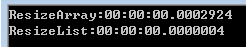
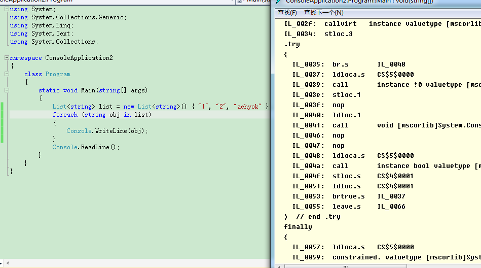
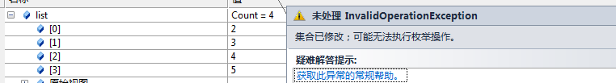
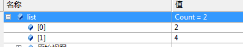

原文连接:https://www.cnblogs.com/ljdong7/p/12014499.html
前言
软件开发过程中，不可避免会用到集合，C#中的集合表现为数组和若干集合类。不管是数组还是集合类，它们都有各自的优缺点。如何使用好集合是我们在开发过程中必须掌握的技巧。不要小看这些技巧，一旦在开发中使用了错误的集合或针对集合的方法，应用程序将会背离你的预想而运行。
本文已更新至http://www.cnblogs.com/aehyok/p/3624579.html 。本文主要学习记录以下内容：
建议16、元素数量可变的情况下不应使用数组
建议17、在多数情况下使用foreach进行循环遍历
建议18、foreach不能代替for
建议19、使用更有效的对象和集合初始化
建议16、元素数量可变的情况下不应使用数组
在C#中，数组一旦被创建，长度就不能改变。如果我们需要一个动态且可变长度的集合，就应该使用ArrayList或List<T>来创建。而数组本身，尤其是一维数组，在遇到要求高效率的算法时，则会专门被优化以提升其效率。一维数组也成为向量，其性能是最佳的，在IL中使用了专门的指令来处理它们。
从内存使用的角度来讲，数组具有以下特点：
1、数组在创建时被分配了一段固定长度的内存。
2、如果数组元素是值类型，则每个元素的长度等于相应的值类型的长度
3、如果数组的元素是引用类型，则每个元素的长度为该引用类型的IntPtr.Size。
4、数组的存储结构一旦被分配，就不能再变化。
而ArryaList是这样的：
1、ArrayList是链表结构，可以动态增减内存空间。
2、如果ArrayList存储的是值类型，则会为每个元素增加12字节的空间，其中4字节用于对象引用，8字节是元素装箱时引入的对象头。
而List<T>是ArrayList的泛型实现，它省去了拆箱和装箱带来的开销。
如果一定要动态改变数组的长度，一种方法是将数组转换为ArrayList或List<T>，如下面的代码所示：

///定义一个一维数组
int[] iArr = { 0,1,3,4,6,7,9};
///将数组转换为ArrayList
ArrayList arrayListInt = ArrayList.Adapter(iArr);
arrayListInt.Add(11);
///将数组转换为List<T>
List<int> listInt = iArr.ToList<int>();
listInt.Add(11);还有一种方法是用数组的复制功能。数组继承自System.Array,抽象类System.Array提供了一些有用的实现方法，其中就包含了Copy方法，它负责将一个数组的内容复制到另外一个数组中。无论是哪种方法，改变数组长度就相当于重新创建了一个数组对象。
为了让数组看上去本身就具有动态改变长度的功能，还可以创建一个名为ReSize的扩展方法。
public static class ClassForExtensions
{
public static Array ReSize(this Array array,int newSize)
{
Type t = array.GetType().GetElementType();
Array newArray = Array.CreateInstance(t, newSize);
Array.Copy(array, 0, newArray, 0, Math.Min(array.Length, newSize));
return newArray;
}
}调用方式如下：
static void Main(string[] args)
{
int[] iArr = { 0,1,3,4,6,7,9};
iArr = (int[])ClassForExtensions.ReSize(iArr, 20);
Console.ReadLine();
}下面我们来对比一下性能,先来看代码：
class Program
{
static void Main(string[] args)
{
ResizeArray();
ResizeList();
Console.ReadLine();
}
public static void ResizeArray()
{
int[] iArr = {0,1,3,4,6,8 };
Stopwatch watch = new Stopwatch();
watch.Start();///用于测量时间间隔
iArr = (int[])iArr.ReSize(10);
watch.Stop();///
Console.WriteLine("ResizeArray:{0}", watch.Elapsed);
}
public static void ResizeList()
{
List<int> iArr = new List<int>(new int[] { 0, 1, 3, 4, 6, 8, 9 });
Stopwatch watch = new Stopwatch();
watch.Start();
iArr.Add(0);
iArr.Add(0);
iArr.Add(0);
watch.Stop();
Console.WriteLine("ResizeList:{0}", watch.Elapsed);
}
}Main函数中主要是调用，自己定义的两个方法，第一个是重新设置数组的长度，第二个是设置List<T>的长度，通过运行时间进行测量：

严格意义上讲，List<T>不存在改变长度的说法，此处主要是来进行对比一下，对List<T>设置长度，并且进行赋值，即便是这样，在时间效率上ResizeList比ResizeArray要高很多很多。
建议17、在多数情况下使用foreach进行循环遍历
这里关于如何针对集合才能使用foreach进行遍历我刚刚写了一篇有关IEnumerable和IEnumerator两个接口的文章，有兴趣的话可以看一下。http://www.cnblogs.com/aehyok/p/3641193.html
感觉使用foreach进行循环遍历，总共有三个好处吧：
1、提供了比较简单、简洁的语法。
2、自动将代码置入try-finally块

3、若类型实现IDispose接口，foreach会在循环结束后自动调用Dispose方法
建议18、foreach不能代替for
foreach存在一个问题是：它不支持循环时对集合进行增删操作。我们来看一下简单的例子：
List<int> list = new List<int>() { 1, 2, 3, 4, 5 };
foreach (int item in list)
{
list.Remove(item);
Console.WriteLine(item.ToString());
}
Console.ReadLine();一起看一下执行结果：

那么下面我们来使用for进行尝试：
List<int> list = new List<int>() { 1, 2, 3, 4, 5 };
for (int i = 0; i < list.Count(); i++)
{
list.Remove(list[i]);
}
Console.ReadLine();进行删除肯定是没问题的。但是要仔细看一下，比如它第一次删除索引0的时候，也就是删除了1，那么它会立即重新调整索引，然后第二次删除的时候，删除的不是2，而是3这个项。那么最终运行完发现还剩余两项

foreach循环使用了迭代器进行集合的遍历，它在FCL提供的迭代器内部维护了一个对集合版本的控制。那么什么是集合版本呢？简单的说，其实它就是一个整型的变量，任何对集合的增删操作都会使版本号加1。foreach循环会调用MoveNext方法来遍历元素，在MoveNext方法内部会进行版本号的检测，一旦检测到版本号有变动，就会抛出InvalidOperationException异常。
如果使用for循环就不会带来这样的问题。for直接使用所引器，它不对集合版本号进行判断，所以不存在因为集合的变动而带来的异常（当然，超出索引长度这种情况除外）。
索引，因为版本检测的缘故，foreach循环并不能带起for循环。
建议19、使用更有效的对象和集合初始化
对象初始化设定项支持可以直接在大括号中对自动实现的属性进行赋值。
class Person
{
public string Name { get; set; }
public int Age { get; set; }
}
class Program
{
static void Main(string[] args)
{
Person person = new Person() { Name = "aehyok", Age = 25 };
Console.ReadLine();
}
}以往只能依靠构造方法传值进去，或者在对象构造完毕后对属性进行赋值。现在这些步骤简化了，初始化设定项实际相当于编译器在对象生成后对属性进行了赋值。
class Person
{
public string Name { get; set; }
public int Age { get; set; }
}
class Program
{
static void Main(string[] args)
{
Person person = new Person() { Name = "Kris", Age = 22 };
List<Person> personList = new List<Person>()
{
new Person() { Name = "aehyok", Age = 25 },
person,
null
};
Console.ReadLine();
}
}使用集合的初始化设定项，编译器会在集合对象创建完毕后对集合调用Add方法。上面这段代码展示了如何在初始化语句中创建一个新对象或一个现有对象，以及一个null值。
不过，初始化设定项绝不仅仅是为了对象和集合初始化的方便，它更重要的作用是为LINQ查询中的匿名类型进行属性的初始化。由于LINQ查询返回的集合中匿名类型的属性都是只读的，如果需要为匿名类型属性赋值，或者增加属性，只能通过初始化设定项来进行。初始化设定项还能为属性使用表达式。
来看一段代码：
List<Person> lst = new List<Person>()
{
new Person(){ Age = 10,Name="Tommy"},
new Person(){ Age = 20,Name="Sammy"}
};
var entity = from p in lst
select new { p.Name, AgeScope = p.Age > 10 ? "Old" : "Young" };
foreach (var item in entity)
{
Response.Write(string.Format("name is {0},{1}", item.Name, item.AgeScope));
}AgeScope 属性是经过计算得出的，有了如此方便的初始化方式，使得代码更加优雅灵活。